대기환경기사 (2009-08-30 기출문제)
1과목: 대기오염 개론
1. 실내공기오염에 관한 설명 중 옳지 않은 것은?
- 빌딩증후군이란 밀폐된 공간내 유해한 환경에 노출되었을 때에 눈자극, 두통, 피로감, 후두염 등과 같은 증상이 일어나는 것을 말한다.
- 대부분의 유기용제는 마취작용을 가지고 있고, 독성은 톨루엔 ＞ 자일렌 ＞에틸벤젠 순으로 독성이 강하다.
- 폼알데하이드는 자극취가 있는 적갈색의 기체이며, 물에 잘 녹고 15% 수용액은 포르말린이라고 한다.
- 유기용제의 인체에 대한 영향을 고려해 보면 벤젠은 혈액에 대한 독성작용이, 에틸벤젠은 신경계에 대한 독성작용이 강하다.
(정답률: 40%)

2. 다음 중 2차 오염물질에 해당되지 않는 것은?
- CH3COOONO2
- Aldehydes
- H2O2
- CO2
(정답률: 62%)
3. 대기오염사건과 기온역전에 관한 설명으로 틀린 것은?
- 로스앤젤레스 스모그사건은 광화학스모그에 의한 침강성 역전이다.
- 런던스모그 사건은 주로 자동차 배출가스 중의 질소산화물과 반응성 탄화수소에 의한 것이다.
- 침강역전은 고기압 중심부분에서 기층이 서서히 침강하면서 기온이 단열압축으로 승온되어 발생하는 현상이다.
- 복사역전은 지표에 접한 공기가 그보다 상공의 공기에 비하여 더 차가워져서 생기는 현상이다.
(정답률: 65%)
4. 태양복사의 산란에 관한 다음 설명 중 가장 거리가 먼 것은?
- 산란의 세기는 입사되는 빛의 파장( λ )에 대한 입자크기(반경)의 비에 의해 결정된다.
- 입자의 크기가 입사되는 빛의 파장에 비해 아주 크게 되면 레일리산란이 발생한다.
- 레일리산란의 경우 그 세기는 파장의 4승에 반비례한다.
- 맑은날 하늘이 푸르게 보이는 이유는 레일리산란 특성에 의해 파장이 짧은 청색광이 긴 적색광보다 더욱 강하게 산란되기 때문이다.
(정답률: 67%)
5. 파스칼(Pasquill)의 대기안정도에 관한 설명으로 옳지 않은 것은?
- 낮에는 일사량과 풍속(지상 10m)으로, 야간에는 운량, 운고와 풍속 등으로부터 안정도를 구분한다.
- 안정도는 A~F까지 6단계로 구분하며, A는 가장 불안정한 상태, F는 가장 안정한 상태를 뜻한다.
- 낮에는 풍속이 약할수록(2m/s이하), 일사량은 강할수록 대기안정도 등급은 가장 안정한 상태를 나타낸다.
- 지표가 거칠고 열섬효과가 있는 도시나 지면의 성질이 균일하지 않은 곳에서는 오차가 크게 나타날 수 있다.
(정답률: 58%)
6. 바람에 관한 다음 설명 중 옳지 않은 것은?
- 북반구의 경도풍은 저기압에서는 시계바늘 반대방향으로 회전하면서 위쪽으로 상승하면서 분다.
- 마찰층내 바람은 높이에 따라 시계방향으로 각천이가 생겨나며, 위로 올라갈수록 실제 풍향은 점점 지균풍과 가까워진다.
- 곡풍은 경사면 → 계곡 → 주계곡으로 수렴하면서 풍속이 가속되기 때문에 낮에 산위쪽으로 부는 산풍보다 더 강하다.
- 해륙풍이 부는 원인은 낮에는 바다보다 육지가 빨리 더워져서 육지의 공기가 상승하기 때문에 바다에서 육지로 8~15km 정도까지 바람(해풍)이 분다.
(정답률: 37%)
7. 다음은 대기분산모델의 종류에 관한 설명이다. 가장 적합한 것은?
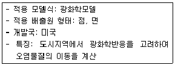
- ADMS(atmospheric dispersion model system)
- UAM(urban airshed model)
- TCM(texas climatological model)
- HIWAY-2
(정답률: 77%)
8. 대기오염사건과 주 원인이 되는 물질을 짝지은 것으로 옳지 않는 것은?
- Meuse valley 사건 - 메틸이소시아네이트
- Donora 사건 - 아황산가스, 황산미스트
- Poza rica 사건 - 황화수소
- London smog 사건 - 아황산가스와 부유먼지
(정답률: 69%)
9. 가우시안 확산모델은 여러 가지 경계조건을 달리 설정함으로써 오염원의 위치와 형태에 따라 오염물질의 농도를 예측할 수 있다. 다음 조건에서의 오염물질 농도를 예측하고자 할 경우 지표농도의 결과식으로 가장 적합한 것은?
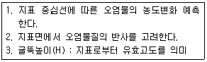
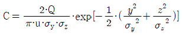
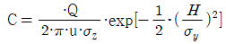
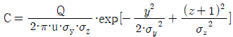
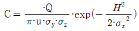
(정답률: 77%)
10. 다음 중 대기오염물질과 그 관련업종과의 연결로 가장 거리가 먼 것은?
- 벤젠 - 도장공업
- 일산화탄소 - 코크스 제조
- 불화수소 - 알루미늄공업
- 암모니아 - 석유정제
(정답률: 54%)
11. 다음 물질의 특성에 대한 설명 중 옳은 것은?
- 탄소의 순환에서 탄소(CO2로서)의 가장 큰 저장고 역할을 하는 부분은 대기이다.
- 불소(Fluorine)는 주로 자연상태에서 존재하며, 주관련 배출업종으로는 황산 제조공정, 연소공정 등이다.
- 질소산화물은 연소시 연료의 성분으로부터 발생하는 fuel NOX와 고온에서 공기 중의 질소와 산소가 반응하여 생기는 thermal NOX등이 있다.
- 염화수소는 유독성을 가진 황록색 기체로서 비료공장, 표백공장 등에서 주로 발생한다.
(정답률: 75%)
12. 황화합물에 관한 다음 설명 중 가장 거리가 먼 것은?
- SO2는 물에 대한 용해도가 높아 구름의 액적, 빗방울, 지표수 등에 쉽게 녹아 H2SO3를 생성한다.
- SO2는 280~290nm에서 강한 흡수를 보이지만 대류권에서는 거의 광분해되지 않는다.
- 대기 중 SO2는 약 90% 정도가 황산염으로 전환되며, 평균체류시간은 약 20일 정도이다.
- CS는 증발하기 쉬우며, CS2 증기는 공기보다 약 2.6배 더 무겁다.
(정답률: 32%)
13. 다음 오염물질의 균질픙 내에서의 건조공기 중 체류시간의 순서배열로 옳게 나열된 것은? (단, 긴 시간 ＞ 짧은 시간)
- N2 ＞ CO ＞ CO2 ＞H2
- N2 ＞ O2 ＞ CH4 ＞ CO
- O2 ＞ N2 ＞ H2 ＞ CO
- CO2 ＞ H2 ＞ N2 ＞ CO
(정답률: 69%)
14. Prandtl 의 압축유체를 위한 Richardson수( Ri ) 표현식으로 옳은 것은? (단, g: 그 지역의 중력가속도, T:잠재온도, u:풍속, z:고도)
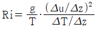
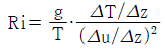
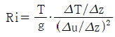
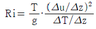
(정답률: 65%)
15. 전향력에 관한 다음 설명 중 옳지 않은 것은?
- 전향인자(f)는 2Ωsinψ로 나타내며, ψ는 위도, Ω는 지구 자전 각속도로서 나타나는 전향력은 물체의 이동방향에 대해 오른쪽 직각방향으로 작용한다.
- 지구 북반구에서 나타나는 전향력은 물체의 이동방향에 대해 오른쪽으로 지각방향으로 작용한다.
- 전향력은 극지방에서 최대, 적도지방은 0 이다.
- 전향력은 전향인자를 속도로 나눈 값으로 정의된다.
(정답률: 46%)
16. 다환 방향족 탄화수소(PAH)에 관한 설명으로 가장 거리가 먼 것은?
- 고농도의 PAH는 지방분을 포함하는 모든 신체조직에 유입되어 간, 신장 등에 축적된다.
- 석탄, 기름, 쓰레기 또는 각종 유기물질의 불완전연소가 일어나는 동안에 형성된 화학물질 그룹을 말한다.
- 고리형태를 갖고 있는 방향족 탄화수소로서 미량으로도 암 및 돌연변이를 쉽게 일으킬 수도 있다.
- 대부분 물에 쉽게 용해되므로 강우정도에 따른 영향이 크며 쉽게 휘발되지 않아 토양오염의 원인이 된다.
(정답률: 45%)
17. 대기의 구조는 균질층과 이질층으로 구분할 수 있다. 이에 관한 설명 중 틀린 것은?
- 지상 0~88km 정도까지의 균질층은 수분을 제외하고는 질소 및 산소 등 분자 조성비가 어느 정도 일정하다.
- 균질층내의 공기는 건조가스로서 지상 0~30km 정도까지 공기의 50%가 존재하고 있다.
- 이질층은 보통 4개층으로 분류되며 지상 3600~9600km는 수소층이라 한다.
- 이질층내의 공기는 강한 산화력으로 인하여 지상에서 발생되어 상승한 이물질들을 산화, 소멸시킨다.
(정답률: 42%)
18. 유효굴뚝높이와 지표상 최고 오염농도와의 관계식에서 지상 최고농도를 현재의 1/5로 하려면 유효굴뚝높이를 원래의 몇 배로 하여야 하는가? (단, 기타 대기조건은 같은 조건이며, sutton식을 이용)
- 0.04
- 0.2
- 2.24
- 5
(정답률: 54%)
19. 다음 특정물질 중 오존 파괴지소가 가장 높은 것은?
- CHCl2CF3
- C3H6FBr
- CH2FBr
- C2F4Br2
(정답률: 53%)
20. 내경 3000mm인 굴뚝으로부터 5000KJ/s의 열을 가진 연기가 25m/s의 속도로 방출되고 있다. 주위의 풍속이 300m/min일 때 연기의 상승고(m)는? (단, 연기의 상승고는 Carson과 Moses의 식 △H =-0.029Vsd/U + 2.63Qh1/2/U 을 이용할것)
- 약 28.6m
- 약 30.6m
- 약 36.6m
- 약 41.6m
(정답률: 32%)
2과목: 연소공학
21. 석탄의 탄화도가 높아질 경우의 현상으로 틀린 것은?
- 착화온도가 낮아진다.
- 수분 및 휘발분이 감소한다.
- 연료비가 증가한다.
- 비열이 감소한다.
(정답률: 62%)
22. 벙커 C유에 3.9%의 S성분이 함유되어 있을 때 건조 연소가스량 중의 SO2양(%)은? (단, 공기비 1.3, 이론 공기량 11.09 Sm3/kg-oil이고, 연료중의 황성분은 완전연소되어 SO2로 된다.)
- 약 0.13%
- 약 0.19%
- 약 0.24%
- 약 0.36%
(정답률: 알수없음)
23. 다음 중 디젤노킹(diesel knocking)방지법으로 가장 거리가 먼 것은?
- 세탄가가 높은 연료를 사용한다.
- 분사개시 때 분사량을 감소시킨다.
- 기관의 압축비를 낮추어 압축압력을 낮게 한다.
- 급기 온도를 높인다.
(정답률: 65%)
24. 매연 발생에 관한 다음 설명 중 가장 거리가 먼 것은?
- -C-C-의 결합을 절단하기보다는 탈수소가 쉬운 쪽이 매연 발생이 어렵다.
- 연료의 C/H 의 비율이 작을수록 매연 발생이 어렵다.
- 탈수소, 중합 및 고리화합물 등과 같이 반응이 일어나기 쉬운 탄화수소일수록 매연이 잘 생긴다.
- 분해하기 쉽거나, 산화하기 쉬운 탄화수소는 매연발생이 적다.
(정답률: 55%)
25. S성분이 1%인 중유를 10ton/hr로 연소시켜 배기가스 중 SO2를 CaCO3로 배연탈황 하는 경우, 이론상 필요한 CaCO3의 양은? (단, 중유 중 S는 모두 SO2로 산화된다고 가정하고, 탈황율은 100%로 본다.)
- 약 0.1ton/hr
- 약 0.3ton/hr
- 약 0.5ton/hr
- 약 0.6ton/hr
(정답률: 50%)
26. 1 centi-poise(cp)는 몇 kg/m .sec 인가?
- 0.001
- 0.01
- 100
- 1000
(정답률: 50%)
27. 중유의 성분 분석결과 탄소:82%, 수소:11%, 황:3%, 산소:1.5%, 기타:2.5% 라면 이 중유의 완전연소시 시간당 필요한 이론 공기량은?(단, 연료사용량:100L/hr, 연료비중 0.95이며, 표준상태기준)
- 약 630 Sm3
- 약 720 Sm3
- 약 860 Sm3
- 약 980 Sm3
(정답률: 48%)
28. 다음 중 1Sm3 당 발열량이 가장 큰 것은?
- C2H6
- C3H6
- C3H8
- C4H10
(정답률: 47%)
29. 메탄을 이론적으로 완전 연소시킬 때 부피를 기준으로 한 공기 연료비(AFR)는? (단, 표준상태기준)
- 2
- 7.52
- 9.52
- 11.52
(정답률: 60%)
30. 열역학적인 평형이동에 관한 원리로, 평형상태에 있는 물질계의 온도, 압력을 변화시키면 그 변화를 감소시키는 방향으로 반응이 진행되어 새로운 평형에 도달한다는 것은?
- 헤스의 원리
- 라울의 원리
- 반트호프의 원리
- 르샤틀리에의 원리
(정답률: 45%)
31. 다음 중 과잉산소량(잔존 O2 량)을 옳게 표시한 것은? (단, A: 실제공기량, Ao: 이론공기량, m: 공기과잉계수(m＞1) 표준상태이며, 부피기준임)
- 0.21mA
- 0.21mAo
- 0.21(m-1)A
- 0.21(m-1)Ao
(정답률: 65%)
32. 석유류의 특성에 관한 설명 중 가장 거리가 먼 것은?
- 일반적으로 경질유는 방향족계 화합물을 10% 미만 함유하고 밀도 및 점도가 낮은 편이다.
- 인화점은 보통 그 예열온도보다 약 5℃ 이상 높은 것이 좋다.
- 인화점이 낮은 경우에는 역화의 위험성이 있고, 높을 경우(140℃ 이상)에는 착화가 곤란하다.
- 일반적으로 API도가 10° 미만이면 경질유, 40° 이상이면 중질유로 분류된다.
(정답률: 15%)
33. 연소에 대한다음 설명으로 가장 거리가 먼 것은?
- 연소장치에서 완전연소 여부는 배출가스의 분석결과로 판정할 수 있다.
- 최대탄산가스량(%)이란 연료를 실제공기량으로 연소시 실제연소가스 중의 최고 CO2량을 뜻한다.
- 연소용 공기 중의 수분은 연료 중의 수분이나 연소시 생성되는 수분량에 비해 매우 적으므로 보통 무시할 수 있다.
- 이론공기량은 연료의 화학적 조성에 따라 다르다.
(정답률: 46%)
34. 메탄의 고위발열량이 9900kcal/Sm3이라면 저위발열량(kcal/Sm3)은?
- 8540
- 8620
- 8790
- 8940
(정답률: 28%)
35. 다음 중 고압기류 분무식 버너에 관한 설명으로 거리가 먼 것은?
- 연료분사범위는 외부혼합식이 500 ~ 1000L/hr, 내부혼합식이 1200 ~2400L/hr 정도이다.
- 연료유의 점도가 는 경우도 분무화가 용이하나 연소시 소음이 크다.
- 분무각도는 30∘ 정도이나 유량조절비는 1:10 정도로 커서 부하변동에 적응이 용이하다.
- 분무에 필요한 1차 공기량은 이론연소공기량의 7~12% 정도이다.
(정답률: 58%)
36. 굴뚝에서 가스의 평균속도를 구할 때는 평균가스온도를 사용한다. 굴뚝입구의 온도가 245℃이고, 출구의 온도가 169℃일 때 굴뚝 내 평균가스온도(tm)는?
- 약 186℃
- 약 191℃
- 약 200℃
- 약 212℃
(정답률: 47%)
37. 착화온도가 낮아지느 조건으로 옳지 않은 것은?
- 공기중의 산소농도 및 압력이 높을수록
- 화학반응성이 클수록
- 활성화에너지가 낮을수록
- 비표면적은 작고, 발열량은 낮을수록
(정답률: 58%)
38. 코크스나 석탄 등이 고온연소 시 고체 표면이 빨갛게 빛을 내면서 반응하는 연소로 화염이 없는 연소 형태는?
- 확산연소
- 자기연소
- 분해연소
- 표면연소
(정답률: 71%)
39. 다음 가연성분 중 완전연소시 단위체적당 이론공기량(체적)이 가장 큰 것은? (단. 표준상태이며, 황성분은 전량 SO2로 배출된다.)
- CO
- H2
- H2S
- CH4
(정답률: 47%)
40. 연소과정에서 공기비가 작을 경우(m＜1) 발생되는 현상으로 가장 적합한 것은?
- 배기가스 중 황산화물과 질소산화물의 함량이 많아져 연소장치의 부식을 가중시킨다.
- 통풍력이 강하여 배기가스에 의한 열손실이 크다.
- 연소 배출가스 중의 일산화탄소가 증대된다.
- 완전연소에 의해 NOX가 증가한다.
(정답률: 56%)
3과목: 대기오염 방지기술
41. 작업의 성질상 포의식이나 boot type으로 할 수 없을 때 부득이 발생원에서 격리시켜 설치하는 형태로 도금세척, 분무도장 등에서 이용되며 외부의 난기류에 의해 그 효과가 많이 감소되는 단점이 있는 외부식 후드형식은?
- Glove box type
- Cover type
- Slot type
- Canopy type
(정답률: 40%)
42. 집진효율이 80%인 1차 집진장치가 있다. 총집진효율이 99%이라면 2차 집진장치의 집진효율은?
- 90%
- 95%
- 98%
- 99%
(정답률: 44%)
43. 표준형 평판 날개형보다 비교적 고속에서 가동되고, 후향날개형을 정밀하게 변형시킨 것으로써 원심력 송풍기 중 효율이 가장 좋아 대형 냉난방 공기조화장치, 산업용 공기청정장치 등에 주로 이용되며, 에너지 절감효과가 뛰어난 송풍기 유형은?
- 비행기 날개형(airfoil blade)
- 방사 날개형(radial blade)
- 프로펠라형(propeller)
- 전향 날개형(forward curved)
(정답률: 62%)
44. 다음 각 집진장치의 유속과 집진특성에 대한 설명 중 옳지 않은 것은?
- 중력집진장치와 여과집진장치는 기본유속이 작을수록 미세한 입자를 포집한다.
- 원심력집진장치는 적정 한계내에서는 입구유속이 빠를 수록 효육은 높은 반면 압력손실은 높아진다.
- 벤츄리스크러버와 제트스크러버는 기본유속이 작을수록 집진율이 높다.
- 건식 전기집진장치는 재비산 한계내에서 기본유속을 정한다.
(정답률: 69%)
45. cyclone의 집진율 향상조건에 대한 설명 중 가장 거리가 먼 것은?
- 미세 먼지의 재비산을 방지하기 위해 skimmer와 turning vane등을 설치한다.
- 배기관경(내관)이 클수록 입경이 작은 먼지를 제거할 수 있다.
- 먼지폐색(dust plugging)효과를 방지하기 위해 축류집진장치를 사용한다.
- 고용량 가스를 비교적 높은 효율로 처리해야 할 경우 소구경 cyclone을 여러 개 조합시킨 multicyclone을 사용한다.
(정답률: 54%)
46. 오염공기 1.995Sm3/min를 전기집진장치로 처리하려고 한다. 높이 4m, 길이 3m 집진판을 사용하여 96%의 집진율을 얻으려면 필요한 집진판의 수는? (단, Deutsch Anderson식 이용, 모든내부집진판은 양면, 두 개의 외부집진판은 각 하나의 집진면을 가지며, 유효 분리속도는 4m/min 이다.)
- 68 개
- 70 개
- 72 개
- 74 개
(정답률: 40%)
47. 불소화합물의 흡수처리에 관한 설명으로 가장 거리가 먼 것은?
- 세정장치 중 충전탑이 가장 적합하다.
- 물에 대한 용해도가 비교적 크므로 수세에 의한 처리가 적당하다.
- 스프레이탑을 사용할 때에 분무 노즐의 막힘이 없도록 보수관리에 주의가 필요하다.
- 처리 중 고형물을 생성하는 경우가 많다.
(정답률: 67%)
48. 여과집진장치에서 먼지제거 메카니즘으로 가장 거리가 먼 것은?
- 관성충돌(inertial impaction)
- 확산(diffusion)
- 직접차단(direct interception)
- 무화(atomization)
(정답률: 65%)
49. 전기집진장치를 사용하여 집진할 때 입자의 비저항이 104Ω.cm 이하인 경우에 관한 설명으로 거리가 먼 것은?
- 포집된 먼지가 처리가스 내로 재비산 된다.
- 암모니아를 주입하여 conditioning하는 방법이 쓰인다.
- 집진극에 흡착된 대전입자의 중화가 빠르다.
- 역전리 현상이 일어난다.
(정답률: 54%)
50. 원심력 집진장치에서 압력손실의 감소 원인으로 가장 거리가 먼 것은?
- 내통이 마모되어 구멍이 뚫려 함진가스가 by pass될 경우
- 호퍼 하단 부위에 외기가 누입될 경우
- 장치 내 처리가스가 선회하는 경우
- 외통의 접합부 불량으로 함진가스가 누풀될 경우
(정답률: 62%)
51. 공장 배출가스 중의 일산화탄소를 백금계의 촉매를 사용하여 연소시켜 처리하고자 할 때, 촉매독으로 작용하는 물질로 가장 거리가 먼 것은?
- Pb
- Rb
- As
- S
(정답률: 72%)
52. 흡착장치에 관한 다음 설명 중 가장 거리가 먼 것은?
- 고정층 흡착장치에서 보통 수직으로 된 것은 대규모에 적합하고, 수평으로된 것은 소규모에 적합하다.
- 일반적으로 이동층 흡착장치는 유동층 흡착장치에 비해 가스의 유속을 크게 유지할 수 없는 단점이 있다.
- 유동층 흡착장치는 고정층과 이동층 흡착장치의 장점만을 이용한 복합형으로 고체와 기체의 접촉을 좋게 할 수 있다.
- 유동층 흡착장치는 흡착제의 유동에 의한 마모가 크게 일어나고, 조업조건에 따른 주어진 조건의 변동이 어렵다.
(정답률: 70%)
53. 다음 설명하는 집진장치로 가장 적합한 것은?
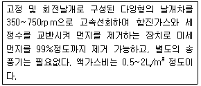
- Theisen washer
- Spray tower
- Venturi scrubber
- Hydro filter
(정답률: 50%)
54. 실린더직경 1.5×102cm인 사이클론으로선회류의 회전수 5인 경우 함진가스 유입속도 10m/s, 입자 밀도 1.5g/cm3일 때 직경 24㎛인 입자의 Lapple식에 의한 이론적 제거효율(%)은? (단, Dp: 절단입경(㎛), 배출가스 점도; 2×10-5kg/m·s, 배출가스의 밀도; 1.3× 10-3g/cm3, 유입구 폭; 1/4× 실린더 직경)
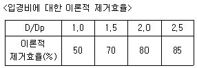
- 50%
- 70%
- 80%
- 85%
(정답률: 30%)
55. 유해가스에 대한 다음 설명 중 가장 거리가 먼 것은?
- Cl2 가스는 상온에서 황록색을 띈 기체이며 자극성 냄새를 가진 유독물질로 관련 배출원은 표백공업이다.
- F2는 상온에서 무색의 발연성 기체로 강한 자극성이며 물에 잘 녹고 관련 배출원은 알루미늄 제련공업이다.
- NO 는 적갈색의 특이한 냄새를 가진 물에 잘 녹는 맹독성 기체로 자동차배출이 가장 많은 부분을 차지한다.
- SO2 는 무색의 강한 자극성 기체로 환원성 표백제로도 이용되고 화석연료의 연소에 의해서도 발생된다.
(정답률: 59%)
56. 다음 중 유체의 점도를 나타내는 단위 표현이 아닌 것은?
- g/cm·s
- poise
- Pa · s
- liter · atm
(정답률: 53%)
57. 후드의 압력손실이 2.5mmH2O 이고, 동압이 1mmH2O 일 경우 유입계수는?
- 0.286
- 0.535
- 0.892
- 1.125
(정답률: 34%)
58. 중력 집진장치에서 수평이동속도 VX, 침강실폭 B, 침강실 수평길이 L, 침강실 높이 H, 종말침강속도를 Vt라면 주어진 입경에 대한 부분집진효율은? (단, 층류기준)
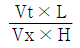
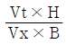
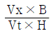
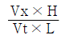
(정답률: 64%)
59. 벤츄리스크러버의 액가스비를 크게 하는 요인으로 가장 거리가 먼 것은?
- 먼지 입자의 점착성이 클 때
- 먼지 입자의 친수성이 클 때
- 먼지의 농도가 높을 때
- 처리가스의 온도가 높을 때
(정답률: 62%)
60. 다음 중 활성탄으로 흡착 시 가장 효과가 적은 것은?
- 초산
- 알콜류
- 일산화질소
- 담배연기
(정답률: 47%)
4과목: 대기오염 공정시험기준(방법)
61. 원자흡광광도법에서 용어의 설명으로 옳은 것은?
- 공명선(Resonance Line) : 원자가 외부로부터 빛을 흡수했다가 다시 먼저 상태로 돌아갈 때 방사하는 스펙트럼선
- 중공음극램프(Hollow Cathode Lamp): 원자흡광분석의 광원이 되는 것으로 목적원소를 함유하는 중공음극 한 개 또는 그 이상을 고압의 질소와 함께 채운 방전관
- 역화(Flame Back) : 불꽃의 연소속도가 작고 혼합기체의 분출속도가 클때 연소현상이 내부로 옮겨지는 것
- 멀티 패스(Multi-path) : 불꽃중에서의 광로를 짧게 하고 반사를 증대시키기 위하여 반사현상을 이용하여 불꽃 중에 빛을 여러번 투과시키는 것
(정답률: 60%)
62. A보일러 굴뚝의 배출가스 온도 240℃, 압력 760mmHg 피토우관에 의한 동압은 0.552mmHg이었다. 이 때 굴뚝 배출가스 평균 유속은? (단, 굴뚝 내 습배출가스의 밀도는 1.3kg/Sm3 , 피토우관 계수는 1 이다.)
- 7.8 m/s
- 9.6 m/s
- 12.3 m/s
- 14.6 m/s
(정답률: 32%)
63. 굴뚝 배출가스 중 비소화합물의 자외선가시선 분광법(흡광광도법) 측정에 관한 설명으로 옳지 않은것은?
- 입자상 비소화합물은 강제 흡인 장치를 사용하여 여과 장치에 채귀하고, 기체상 비소는 적당한 수용액 중에 흡수 채취하며, 채취된 물질을 산 분해 처리한다.
- 전처리하여 용액화한 시료 용액 중의 비소를 다이에틸다이티오카바민산은 흡수분광법으로 측정하며, 정량범위는 2~10㎍이며, 정밀도는 2~10% 이다.
- 일부 금속(크롬, 코발트, 구리, 수은, 은 등)이 수소화비소(AsH3) 생성에 영향을 줄 수 있지만 시료 용액 중의 이들 농도는 간섭을 일으킬 정도로 높지는 않다.
- 메틸 비소화합물은 pH 10에서 메틸수소화비소(methylarsine)를 생성하여 흡수용액과 착물을 형성하나, 총 비소 측정에는 영향을 미치지 않는다.
(정답률: 60%)
64. 굴뚝배출가스 중 시안화수소 분석방법에 대한 설명 중 옳지 않은 것은?
- 피리딘 피라졸론법은 약 25℃로 30분간 방치하여 발색시키고 이 액을 각각 10mm셀에 옮겨 놓고 파장 470nm부근에서 흡광도를 측정한다.
- 피리딘 피라졸론법은 시료 채취량 100~1,000mL인 경우 시안화수소의 농도가 0.5~100ppm인 것의 분석에 적합하다.
- 피리딘 피라졸론법은 할로겐 등의 산화성 가스와 황화수소 등의 영향을 무시할 수 있는 경우에 적용한다.
- 질산은 적정법은 시료 채취량이 50L인 경우 시료 중의 시안화수소의 정량 범위는 5~100ppm이다.
(정답률: 35%)
65. 소각로 배출가스 중의 수은화합물 측정방법에 관한 설명으로 옳지 않은 것은?
- 환원기화 원자흡광광도법에 의한 측정범위는 0.02~0.8㎍/mL 이다.
- 환원기화 원자흡광광도법은 Hg+2 형태로 채취한 수은을 Hg-2 형태로 환원 시켜 측정한다.
- 흡광광도법(디티존 법)은 490nm에서 흡광도를 측정하는 방법이다.
- 흡광광도법(디티존 법)의 정량범위는 0.001~0.025 mg/L 이고 표준편차율은 10~3% 이다.
(정답률: 40%)
66. 다음은 굴뚝 배출가스 중의 이황화탄소 분석방법에 관한 설명이다. ( )안에 알맞은 것은?
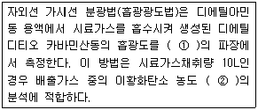
- ① 340nm, ② 0.⑤~1 V/Vppm
- ① 340nm, ② 3~60 V/Vppm
- ① 435nm, ② 0.⑤~1 V/Vppm
- ① 435nm, ② 3~60 V/Vppm
(정답률: 53%)
67. 굴뚝 배출가스 중 총탄화수소 측정을 위한 장치 구성조건등에 관한 설명으로 틀린 것은?
- 총탄화수소분석기는 흡광차분광방식 또는 비불꽃(nonflame)이온크로마토그램방식의 분석기를 사용하며 폭발위험이 없어야 한다.
- 시료채취관은 스테인레스강 또는 이와 동등한 재질의 것으로 하고 굴뚝중심 부분의 10%범위 내에 위치할 정도의 길이의 것을 사용한다.
- 기록계를 사용하는 경우에는 최소 4회/분이 되는 기록계를 사용한다.
- 영점가스로는 총탄화수소농도(프로판 또는 탄소등가 농도)가 0.1 ppmv 이하 또는 스팬값의 0.1% 이하인 고순도 공기를 사용한다.
(정답률: 24%)
68. A연도 배출가스 중의 수분량을 흡습관법으로 측정한 결과 다음과 같은 결과를 얻었다. 습배출가스 중의 수중기 백분율은? (단, 표준상태 기준)
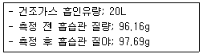
- 약 6.4 %
- 약 7.1 %
- 약 8.7 %
- 약 9.5 %
(정답률: 34%)
69. 다음은 환경대기 중의 석면농도 측정을 위한 시료 채취위치 및 시간기준이다. ( )안에 가장 적합한 것은?
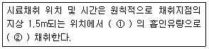
- ① 10L/min, ② 4시간 이상
- ① 10L/min, ② 24시간 이상
- ① 2L/min, ② 4시간 이상
- ① 2L/min, ② 24시간 이상
(정답률: 47%)
70. Low Volume Air Sampler를 사용하여 환경대기 중의 입자상 물질을 포집하려고 한다. 장치의 구성에 관한 설명 중 옳지 않은 것은?
- 흡인펌프는 연속해서 10일이상 사용할 수 있고, 진공도가 낮은 것을 사용한다.
- 여과지홀더 내의 팩킹(Packing)은 불소수지로 만들어진 것을 사용한다.
- 부자식 면적유량계에 새겨진 눈금은 20℃ 1기압에서 10~30L/분 범위를 0.5L/분까지 측정할 수 있도록 되어 있는 것을 사용한다.
- 입자상 물질포집용 여과지는 통상 유리섬유제여과지의 구멍 크기가 1~3㎛되는 니트로셀룰로즈제 멤브레인 필터 또는 석영섬유제여과지 등을 사용한다.
(정답률: 57%)
71. 일반적으로 사용하는 이온크로마토그래피의 구성장치 중 분리관에 대한 설명으로 가장 거리가 먼 것은?
- 이온교환체의 구조면에서는 표층피복형, 표층박막형, 전다공성 미립자형이 있다.
- 양이온 교환체는 표면에 슬폰산기를 보유한다.
- 금속이온 분리용으로는 스테인레스관이 효과적이다.
- 분리관은 에폭시수지관 또는 유리관 등이 사용된다.
(정답률: 36%)
72. 이온크로마토그래피의 일반적인 장치 구성순서고 옳은 것은?
- 펌프-시료주입장치-용리액조-분리관-검출기-써프렛서
- 용리액조-펌프-시료주입장치-분리관-써프렛서-검출기
- 시료주입장치-펌프-용리액조-써프렛서-분리관-검출기
- 분리관-시료주입장치-펌프-용리액조-검출기-써프렛서
(정답률: 50%)
73. 다음은 흡광광도법에서 측광부에 관한 설명이다. ( )안에 가장 알맞은 것은?
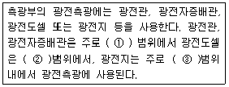
- ①근적외파장, ②자외파장, ③가시파장
- ①가시파장, ②근자외 내지 가시파장, ③적외파장
- ①근적외파장, ②근자외파장, ③가시 내지 근적외파장
- ①자외 내지 가시파장, ②근적외파장, ③가시파장
(정답률: 43%)
74. 환경대기 중의 각 항목별 분석방법의 연결로 옳지 않은 것은?
- 질소산화물: 살츠만법
- 옥시단트(오존으로서): 광산란법
- 일산화탄소: 수소염이온화검출기법(가스크로마토그래프법)
- 아황산가스: 파라로자닐린법
(정답률: 38%)
75. 다음은 전기아크로를 사용하는 철강공장에서 일정한 굴뚝을 거치지 않고 외부로 비산 배출되는 먼지측정방법중 불투명도법에 관한 설명이다. ( )안에 알맞은 것은?
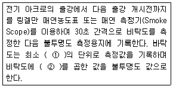
- ① 0.5도, ② 20%
- ① 0.5도, ② 100%
- ① 1도, ② 20%
- ① 1도, ② 100%
(정답률: 36%)
76. 굴뚝 배출가스 중 카드뮴을 원자흡수 분광광도법(원자흡광광도법)으로 분석하려고 한다. 채취한 시료에 유기물이 함유되지 않았을 경우 분석용 시료용액의 전처리방법으로 가장 적합한 것은?
- 질산-과산화수소법
- 과망간산칼륨법
- 질산법
- 저온화학법
(정답률: 37%)
77. 비분산 적외선 분석법에서 응답시간에 관한 설명이다. ( )안에 알맞은 것은?
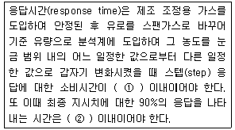
- ① 1초, ② 60초
- ① 5초, ② 60초
- ① 1초, ② 40초
- ① 5초, ② 40초
(정답률: 53%)
78. 굴뚝 배출가스 중 아황산가스의 자동연속측정방법에서 사용되는 용어의 의미로 옳지 않은 것은?
- 검출한계 : 제로드리프트의 2배에 해당하는 지시치가 갖는 아황산가스의 농도를 말한다.
- 응답시간 : 시료채취부를 통하지 않고 제로가스를 연속 자동측정기의 분석부에 흘려주다가 갑자기 스팬가스로 바꿔서 흘려준 후, 기록계에 표시된 지시치가 스팬가스 보정치의 95%에 해당하는 지시치를 나타낼 때까지 걸리는 시간을 말한다.
- 경로(Path), 측정시스템 : 굴뚝 또는 덕트 단면 직경의 5%이상의 경로를 따라 오염물질 농도를 측정하는 배출가스 연속자동측정시스템을 말한다.
- 제로가스 : 공인기관에 의해 아황산가스 농도가 1ppm미만으로 보증된 표준가스를 말한다.
(정답률: 45%)
79. 굴뚝 배출가스 중 알데히드 및 케톤화합물(카르보닐화합물)의 분석방법에 대한 설명으로 가장 적합한 것은?
- 정량범위는 카르보닐 화합물의 질량으로서 0.001~0.02μg이다.
- 크로모트로핀산법에서 다른 포화알데히드의 영향은 0.01%정도, 불포화알데 히드의 영향은 수 % 정도이며, 측정범위는 배출가스량 60L일 때 0.01~0.2ppm이다.
- 아세틸아세톤법에서 아황산가스가 공존하면 영향을 받기 때문에 흡수발색액에 아세틸아세톤을 가한다.
- 시료를 아연아민착염 용액에 흡수시켜 P-아미노디메틸아닐린 용액과 염화제이철용액을 가하여 생성되는 메틸렌블루의 흡광도를 측정하여 포름알데히드를 정량한다.
(정답률: 17%)
80. 연료용 유류 중의 황함유량 분석방법으로 옳지 않은 것은?
- 연소관식 공기법은 500~550℃로 가열한 설영재질 연소관 중에 공기를 불어넣어 시료를 연소시킨 후 생성된 황산화물을 붕산나트륨표준액으로 중화 적정한다.
- 연소관식 공기법의 경우 불용성 황산염을 만드는 금속 (Ba, Ca 등)이 들어있는 시료에는 적용할 수 없다.
- 연소관식 공기법의 경우 연소되어 산을 발생시키는 원소(P, N, Cl 등)가 들어있는 시료에는 적용할 수 없다.
- 방사선식 여기법은 시료에 방사선을 조사하고, 여기된 황의 원자에서 발생하는 형광 X선의 강도를 측정한다.
(정답률: 29%)
5과목: 대기환경관계법규
81. 환경정책기본법령상 대기 환경기준으로 틀린 것은?
- 오존(O3)의 8시간 평균치:0.06ppm이하
- 미세먼지(PM10)의 연간평균치:100μg/m3 이하
- 일산화탄소(CO)의 1시간 평균치:25ppm이하
- 납(Pb)의 연간 평균치:0.5μg/m3이하
(정답률: 34%)
82. 다음 중 대기환경보전법령상 초과부과금 산정기준시 적용되는 오염물질 1킬로그램당 부과금액이 가장 적은 오염물질은?
- 불소화합물
- 염화수소
- 염소
- 이황화탄소
(정답률: 55%)
83. 대기환경보전법상 대기환경규제지역을 관할하는 시.도지사는 그 지역에 대기환경 규제지역으로 지정.고시된 후 몇 년 이내에 그 지역의 환경기준을 달성.유지하기 위한 계획을 수립하고 시행하여아 하는가?
- 1년 이내
- 2년 이내
- 3년 이내
- 5년 이내
(정답률: 30%)
84. 대기환경보전법상 이 법에서 사용하는 용어의 뜻으로 옳지 않은 것은?
- “첨가제”란 자동차의 성능을 향상시키거나 배출가스를 줄이기 위하여 자동차의 연료에 첨가하는 탄소와 수소만으로 구성된 화학물질로서 자동차연료에 부피기준으로 5%미만으로 첨가하는 물질을 말한다.
- “매연”이란 연소할 때에 생기는 유리탄소가 주가 되는 미세한 입자상물질을 말한다.
- “가스”란 물질이 연소.합성.분해될 때에 발생하거나 물리적 성질로 인하여 발생하는 기체상물질을 말한다.
- “휘발성유기화합물”이란 탄화수소류 중 석유화학제품, 유기용제, 그 밖의 물질로서 환경부장관이 관계 중앙 행정기관의 장과 협의하여 고시하는 것을 말한다.
(정답률: 40%)
85. 대기환경보전법상 국가가 자동차로 인한 대기오염을 줄이기 위하여 기술개발 또는 제작에 필요한 재정적,기술적 지원을 할 수 있는 시설 또는 장치로 가장 거리가 먼 것은?
- 저공해자동차 및 그 자동차에 연료를 공급하기 위한 시설
- 저소음형머플러
- 저공해엔진
- 배출가스 저감장치
(정답률: 55%)
86. 다음은 환경정책기본법상 용어의 정의이다. ( )안에 알맞은 것은?
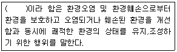
- 환경복원
- 환경보전
- 환경개선
- 환경정화
(정답률: 34%)
87. 다음은 대기환경보전법규상 첨가제,촉매제 제조기준에 맞는 제품의 표시방법이다. ( )안에 알맞은 것은?
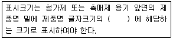
- 100분의 30 이상
- 100분의 25 이상
- 100분의 15 이상
- 100분의 10 이상
(정답률: 60%)
88. 대기환경보전법규상 고체연료 사용시설 설치기준 중 석탄사용시설기준이다. ( )안에 알맞은 것은?
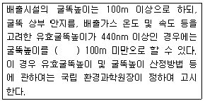
- 60m 이상
- 50m 이상
- 30m 이상
- 20m 이상
(정답률: 67%)
89. 대기환경보전법령상 굴뚝 자동측정기기의 부착을 면제할 수 있는 경우로 거리가 먼 것은?
- 연소가스 또는 화염이 원료 또는 제품과 직접 접촉하는 발전시설로서 규정에 따른 청정연료를 사용하는 경우
- 규정에 의해 방지시설의 설치를 면제받은 경우(굴뚝 자동측정기기의 측정항목에 대한 방지시설의 설치를 면제받는 경우에만 해당)
- 보일러로서 사용연료를 6개월 이내에 청정연료로 변경 할 계획이 있는 경우
- 연간 가동일수가 30일 미만인 배출시설인 경우
(정답률: 17%)
90. 다중이용시설 등의 실내공기질 관리법규상 노인전문병원의 PM10(㎍/m3) 실내공기질 유지기준은?
- 250 이하
- 200 이하
- 150 이하
- 100 이하
(정답률: 38%)
91. 대기환경보전법상 위반행위 중 “200만원 이하의 과태료 부과”에 해당하는 것은?
- 제조기준에 맞지 아니한 것으로 판정된 자동차연료를 사용한 자
- 제조기준에 맞지 아니한 것으로 판정된 촉매제를 공급 한 자
- 배출허용기준에 맞는지의 여부 확인을 위해 배출시설에 측정 기기의 부착 등의 조치를 하지 아니한 자
- 제조기준에 맞지 아니한 것으로 판정된 촉매제임을 알면서 사용한 자
(정답률: 59%)
92. 대기환경보전법규상 위임업무 보고사항 중 보고횟수 기준이 연 2회에 해당하는 것은?
- 굴뚝자동측정기기의 정도검사현황
- 비산먼지 발생대상사업 신고현황
- 수입자동차 배출가스 인증 및 검사현황
- 휘발성유기화합물 배출시설 설치신고현황
(정답률: 48%)
93. 대기환경보전법상 환경기술인의 업무를 방해하거나 환경기술인의 요청을 정당한 사유없이 거부한 사업자에 대한 벌칙기준으로 옳은 것은?
- 5년 이하의 징역 또는 3000만원 이하의 벌금
- 1년 이하의 징역 또는 500만원 이하의 벌금
- 6월 이하의 징역 또는 300만원 이하의 벌금
- 200만원 이하의 벌금
(정답률: 24%)
94. 다음은 대기환경보전법규상 정밀검사대행자 및 지정사업자의 기술능력 및 시설.장비기준 중 검사진로 규격기준이다.
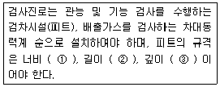
- ① 0.8m 이상, ② 5m 이상, ③ 1m 이상
- ① 0.8m 이상, ② 6m 이상, ③ 1.5m 이상
- ① 1.5m 이상, ② 5m 이상, ③ 1m 이상
- ① 1.5m 이상, ② 6m 이상, ③ 1m 이상
(정답률: 39%)
95. 대기환경 보전법규상 환경부령으로 정하는 비산먼지 발생사업(건설업)중 신고대상사업이 아닌 것은?
- 연며적 2000m2 인 건축물 축조공사 (건축물의 중· 개축 및 재축을 포함)
- 공사면적 2000m2 인 토목공사
- 면적합계 5000m2 인 조경공사
- 연면적 2000m2 인 지반조성공사 중 건축물해체공사
(정답률: 32%)
96. 환경정책 기본법령상 아황산가스(SO2)의 대기환경기준으로 옳게 연결된 것은?
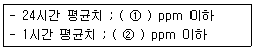
- ① 0.03 , ② 0.06
- ① 0.⑤ , ② 0.15
- ① 0.06 , ② 0.10
- ① 0.08 , ② 0.12
(정답률: 36%)
97. 다중이용시설 등의 실내공기질 관리법규상 신축 공동주택의 실내공기질 권고기준으로 옳은 것은?
- 벤젠 50㎍/m3 이하
- 폼알데하이드 300㎍/m3 이하
- 에틸벤젠 360㎍/m3 이하
- 스티렌 700㎍/m3 이하
(정답률: 65%)
98. 대기환경보전법규상 자동차연료 제조기준 중 휘발유 90% 유출온도(℃) 기준은? (단, 2009년 1월 1일부터 적용기준)
- 150 이하
- 160 이하
- 170 이하
- 180 이하
(정답률: 34%)
99. 대기환경보전법규상 운행차정기검사의 방법 및 기준 중 원동기가 충분히 예열되어 있는 조건에서 배출가스 검사대상 자동차 상태 검사방법이다. ( )안에 알맞은 것은?
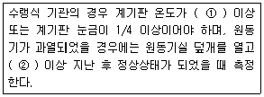
- ① 30℃, ② 5분
- ① 30℃, ② 1시간
- ① 40℃, ② 5분
- ① 40℃, ② 1시간
(정답률: 28%)
100. 대기환경보전법규상 “대형화물자동차”의 규모기준으로 옳은 것은? (단, 2009년 1월1일 이후)
- 엔진배기량이 1000cc 이상이고, 차량 총중량이 5톤 이상.
- 엔진배기량이 1000cc 이상이고, 차량 총중량이 10톤 이상
- 정격출력이 19kW 이상 560kW 미만
- 차량 총중량이 3.5톤 이상 15톤 미만
(정답률: 45%)